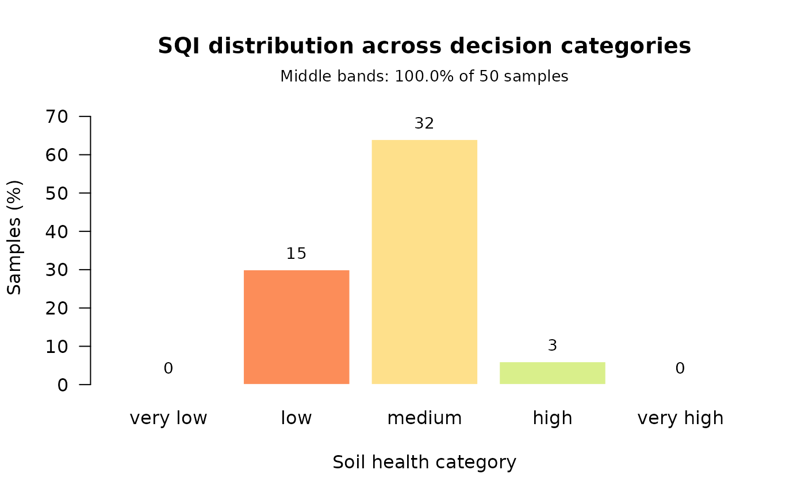

Plot the distribution of an index across decision categories
Source:R/visualization.R
plot_sqi_validation.RdDraws the diagnostic that sqi_validate treats as its headline:
how many samples the index places in each soil-health band. An index that
piles everything into the middle cannot inform a decision, and that is
visible here in a way it is not in a correlation coefficient.
Usage
plot_sqi_validation(
x,
col = c("#d73027", "#fc8d59", "#fee08b", "#d9ef8b", "#1a9850"),
...
)Arguments
- x
An
sqi_validationobject, ansqi_result, or a numeric vector of index values. The latter two are validated on the fly with default settings.- col
Fill colours for the bars, recycled across bands. Defaults to a red-to-green ramp so that "very low" and "very high" read at a glance.
- ...
Additional graphical parameters passed to
barplot.
Examples
props <- c("pH", "OM", "N", "P", "K", "CEC", "BD")
result <- compute_sqi_properties(soil_data, properties = props,
id_column = "SampleID")
plot_sqi_validation(result)
#> Warning: 100% of samples fall in the middle bands (threshold 80%). An index that declines to separate samples cannot inform a decision, however well it correlates with anything else. Consider a scoring or aggregation route that discriminates more strongly -- see sqi_stability().
